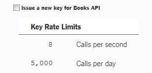
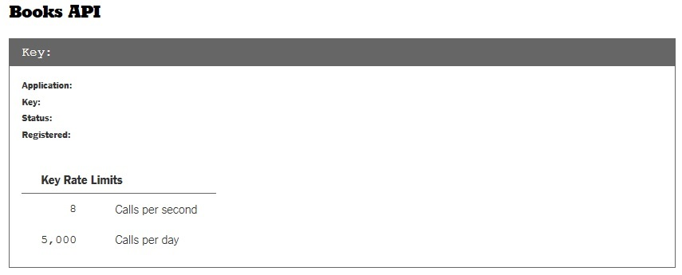

The New York Times has an extensive amount of best seller lists and book reviews. They provide a free, public API to access this data. You can use this API to search through various best seller lists, or to look up review information for a particular book.
The following are important sources of information:
The first thing you want to do is register for an API key. You will need to create a free account first; once you are logged in, just return to this link. There, you can request keys for as many NYT APIs as you would like. Check the following box to request a Books API key:
After you successfully create a key, you should see something like the following for each key you requested (with all the fields populated):
Note that the NYT uses different API keys for each of their many APIs, so make sure you are using the correct key when you send a request. If you use the wrong key, your request will not work.
For the examples in this guide, I am using Node.js with the Express module. You should be familiar with JavaScript to follow along with my examples. I am also using the request module to send API requests. It is critical that you include this module with the following line:
var request = require('request');
Also, I have saved my NYT Books API key as a string called nytBooksKey in a file called credentials.js. I therefore access my key using credentials.nytBooksKey. If you define your key in the same file that you perform your API calls, you do not need to access it using credentials.nytBooksKey; you can access it using whatever variable you defined.